Generative Adversarial Nets
Authors: Ian J. Goodfellow, Jean Pouget-Abadie, Mehdi Mirza, Bing Xu, David Warde-Farley, Sherjil Ozair, Aaron Courville, Yoshua Bengio
For class EE/CSC 7700 ML for CPS
Instructor: Dr. Xugui Zhou
Presentation by Group 6: Pranav Pothapragada
Time of Presentation:10:30 AM, Wednesday, October 30, 2024
Blog post by Group 1: Joshua McCain, Josh Rovira, Lauren Bristol
Link to Paper:
https://proceedings.neurips.cc/paper_files/paper/2014/file/5ca3e9b122f61f8f06494c97b1afccf3-Paper.pdf
Slide Outlines
Summary of the Paper
The authors of this paper present their innovative Generative Adversarial Nets, or GANs. This process utilizes adversarial training by training two models simultaneously- one generative model and one discriminative model. These models achieve different goals that when used together, are able generate "synthetic" output that is similar to real data.
Title Slide
Presentation Contents
Motivation
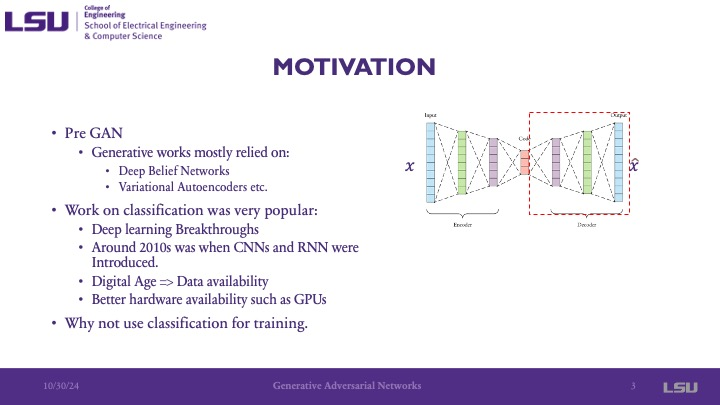
The motivation for the development of the GAN is that at the time that the paper was published, the development of generative models mainly relied on deep belief networks and autoencoders, used to represent and learn relationships among data to reconstruct and generate output. At the time, there were discriminator and classifiers that would classify data into given groups. The motivation is that there are problems with these approaches, including complex probablistic determinations that were used in the generation itself, and the development of GANs looked to explore the question of, as the presenter stated, "Why not use classification for training [of generative networks]"
Abstract
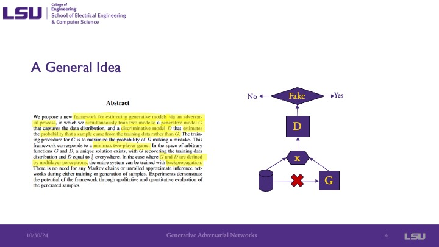
This paper introduces a generative model that is trained via an adversarial process, which one can think of a a two player game, where both players are trying to achieve opposite goals. This is achieved by using two models: a generative model G and a discriminant model D, both of which consist of multilayer perceptrons. The generative model G has the goal of producing, or generating, an output that the discriminant model will classify as real rather than fake (generated).
Universal Approximation Theorem
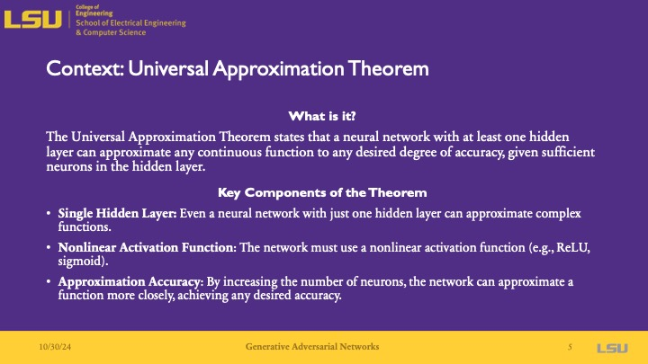
The universal approximation theorem says that a neural network to be able to approximate a continuous distribution if it has even just a single hidden layer and uses a nonlinear activation function. It also notes that the accuracy of the model is influenced by the number of neurons- where more neurons lead to a better approximated function.
Adversarial Nets
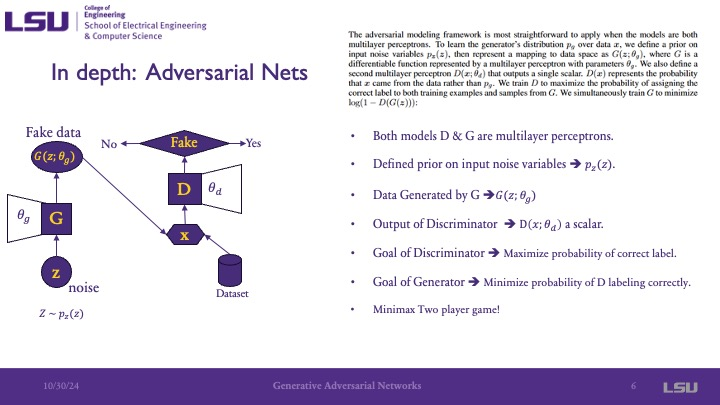
In the adverasrial net, both D and G are multilayer perceptrons. G will generate fake data, and D will classify if the generated data is real (1) or fake (0). The input to the generator is noise, and the output is "fake" data. This fake data is then the input to the discriminator, which classifies it as fake or real. The goal of the generator is to "trick" the discriminator into classifying the fake data as real data. This means that the goal of G is to MINIMIZE the accuracy of the discriminator, and the goal of D is to MAXIMIZE the probability of it predicting the correct label- a minimax problem.
Value Function
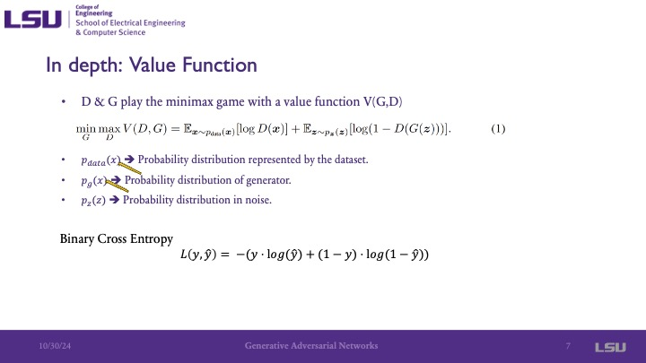
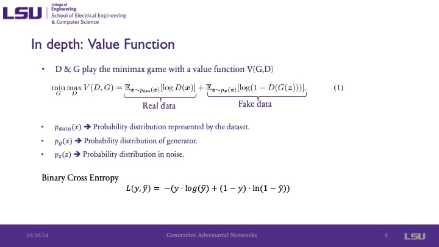
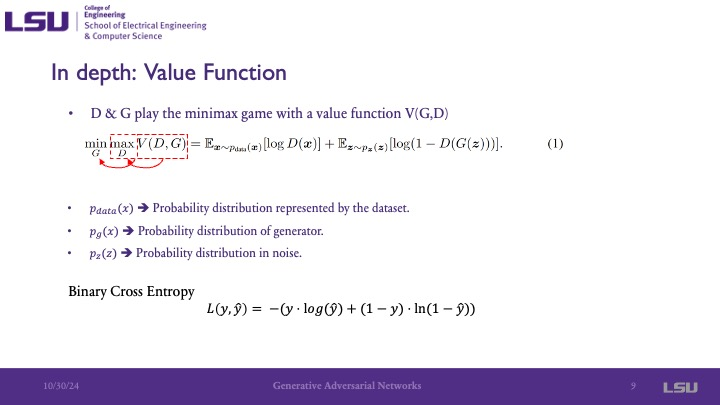
These slides present the value function, or cost/objective function, in this adversarial approach. It indicates that the function is an attempt to minimize the maximum value of the function. The presenter noted that it is similar to the binary cross entropy function. pdata is the distribution of the data, which we do not have but we assume there is some distribution of data using the discrete samples that we have. pz is the probability distribution of the noise input into the system. pgx is the probability distribution that the generation has in its parameters that is represented by its multilayer perceptron structure. The presenter pointed out that both pdata and pg have the same domain, and additionally that the generator is not concerned with the real data, only minimizing the probability of the value function.
The Intuition
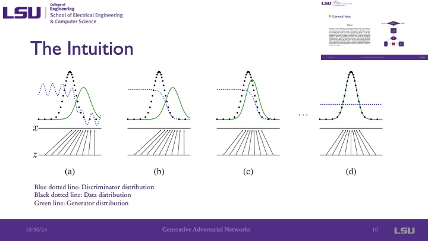
On this slide, we can see the discriminator distribution, the data distribution, and the generator distribution. Because the dicriminator does not start as trained, it is simply a random distibution. We can see that throughout the graphs, the probability distribution of the data ends up overlapping/equaling the probabillity distribution of the generator, indicating that the fake and real data is very similar. The minimax goal of these models is achieved gradient ascent by the discriminator to maximize the probability of correct classification, and then gradient descent by the generator to minimize this probability of the discriminator's correct classification. This is visualized in these images because as the distribution of the generator increases, the distribution of the discriminator decreases. The presented noted that this is a very simple example, as it is assuming the data is 1-dimensional and would typically be multidimensional.
The Algorithm
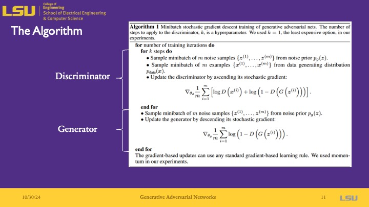
The algorithm is run for any number of training iterations that you require or specify to reach your desired training accuracy. The discriminator is first updated by ascending the stoichastic gradient with a set learning rate. After k steps, you have a better discriminator that is able to discriminate between fake and real data. Then, the noise samples are used in the generator to generate generator values, which are updated by descending it's stoichastic gradient.
Theoretical proof: Global Optimality
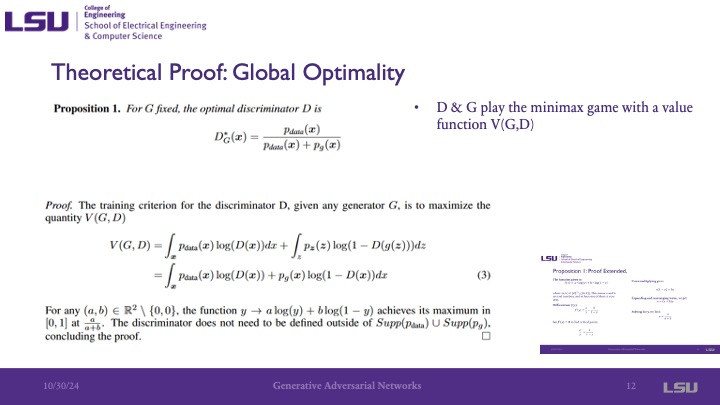
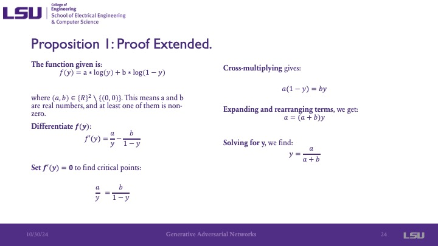
This paper included the proof for its work due to its innovative approach that required proving its correctness. They start with the proposition that if the generator is fixed, the optimal discriminator is given by pdata / (pdata + pg). And they assume that for the final training, we would have pdata = pg, so it becomes pdata / 2pdata = .5, which is what we expect. The next equation shows the minimax game played between G and D, which ends up being similar to the value function. To rigorously prove it, they said the part at the bottom about a and b. This shows that the function achieves its maximum value, its critical point, at a / (a+b). The differentiation of this Y is shown in the other slide as additional information for this proof.
Theoretical proof: Global Optimality
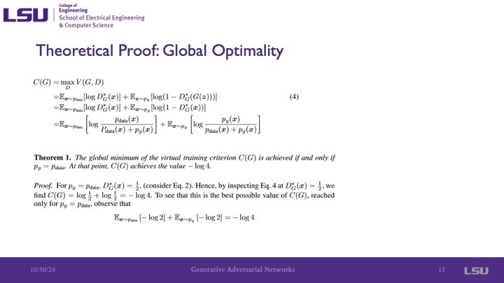
By now, we know the global optimal value is, and they now introduce the criteria function C(G), which represents the function for the global minimum of G. The solution of the equation shown comes out to -log4.
Theoretical proof: Use of Jensen-Shannon Divergence formula

Then, the Jensen-Shannon divergence formula is used to show the similarity between pge and pdata, and we see that it is very close to what C(G) is. Manipulation of the equation shows that we have it comes out to 0, and because it is a divergence and a measure of similarity, zero is the lowest value that it can have and indicates that they are the same.
Theoretical proof: Convergence
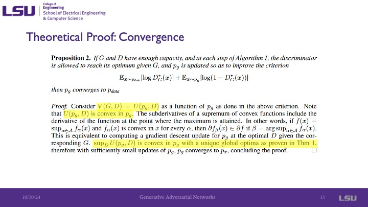
The global optimal value is a convex function. For convex functions, you can use a stoichastic or other gradient descent methods to make the system converge, providing proof of convergence.
Experiments
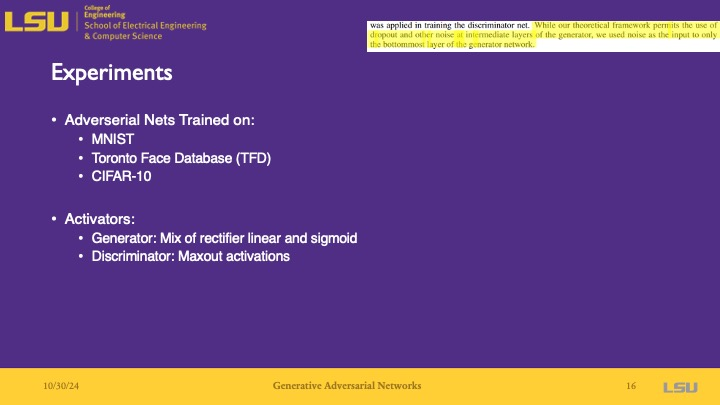
For the experiments, they used the MNIST dataset of handwritten digits, the Toronto Face Database (TFD), as well as the CIFAR-10 dataset of images. For the activation function for the generator, they used the rectified linear and sigmoid activation functions, and used maxout activation functions for the discriminator. The presenter noted that today, max out activations are not used as much anymore because there are better functions to use and are not very good. But when this paper was published about 10 years ago, they were used much more commonly, so their approach was valid. Additionally, an innovative aspect of this is that the authors only used noise at the input layer, which is now commonly done today, but at the time this was different and this is one of the first papers to do so, as noted by the presenter.
Experiments: Results
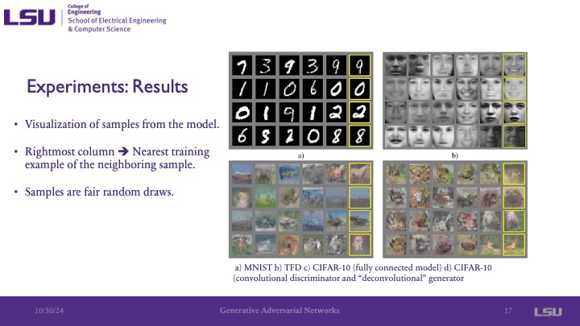
This slide shows some examples from each dataset. The rightmost image on each row shows the most similar image generated to its neighboring images. You can see that this closest match image still has noticable differences as the complexity of the image increases from handwritten black and white digits, to black and white images of faces, to more complex images with color.
Experiments: Results
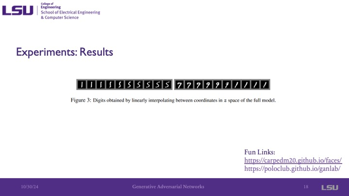
This slide shows that as you move through the coordinates in the Z space, you get different semantics in the image. Something interesting here that the presenter pointed out is that as we move in one coordinate in space, the 1 digit generated slowly transforms into a 5, 9, and then a 1.
Advantages and Disadvantages
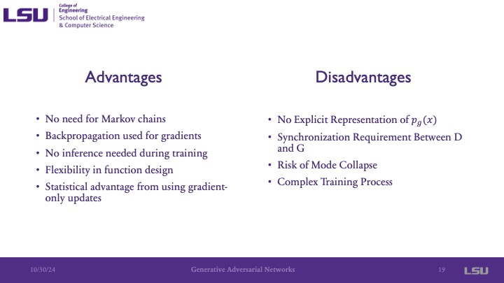
The advantages are that there is no need for Markov chains and that back propagation is used for gradients. This is interesing because this paper was published when deep learning was not really used for generators, and they were still mainly using deep belief networks, autoencoders, or similar approaches. Also, no inference was needed during training, setting it apart from deep belief networks. There is also more flexibility in design, such as design aspects of the multilayer perceptron. The disadvantages include that there is no explicit representation for pg, as noted before in the presentation. Now it is not so much of a big deal, but when this paper was published it was because the other generators at the time mostly had a representation of the generator. Additionally, there is a need for synchronization between D and G, where a lack of synchronization can lead to vanishing gradient issues when one is much better than the other, causing the training to fail. Mode collapse is another disadvantage that is still a challenge in the GAN community today. This is when some of the space becomes almost ignored by the generator when the generator finds one data point that is very close to the data and only extrapolates from there.
Relation to CyberPhysical Systems
GANs have uses in cyberphysical systems from anomaly detection using generated data, privacy preserving data sharing where the generator is able to train on the data while maintaining the privacy of the people involved by the generator having a probaility distribution of the data rather than the original data. Additionally, it can be used to generate synthetic data to have larger datasets based on original data, such as generating data for robotics research.
Team Acknowlegement
Team member acknowlegements
Questions
Group 3 asked if the generator could be used for video or different types of inputs, and if the discriminator would have to be modified for the different input, and if this would change the computational resources needed. The presenter said yes, different inputs could be used, and that the computational resources would be dependent on the domain space or depth to model the probability distribution or if more neurons are used, rather than the input type.
Group 8 asked about in slide 14, because the divergence comes out to a constant, are they saying that the Jensen-Shannon divergence should reach that constant. The presenter answered by saying that ideally, yes it should reach that constant,but there will still be some divergence because it is the ideal value. The same group then asked if the adversarial loss of the discriminator can be used if a diffusion model is used, and the presenter said that while they aren't 100% sure if there has been work in that area as this paper introduced the GAN concept, it is an interesting idea.
Discussion Questions
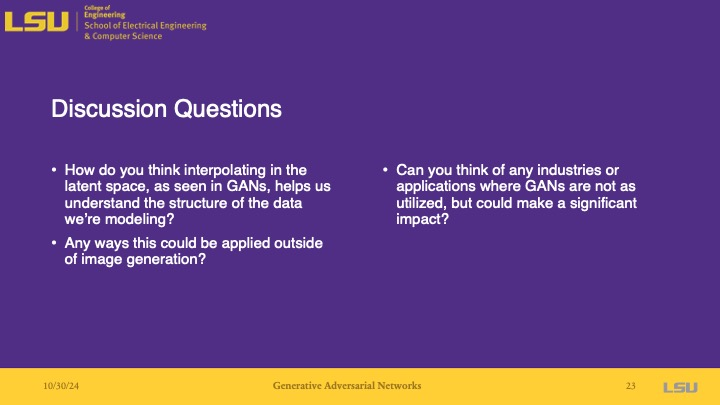
Question 1: Group 1 said that attributed in the dataset are differences/variations in the data, like how in the Toronto Face Dataset, it is interesting that the semantic features of the images are directly mapped to the Z-space.
Question 2 and 3: One student said that it may be able to be used in generating simulations for simulated environments to be able to provide more data to something like an autonomous vehicle. The presenter mentioned that this may help to interpolate between the on-road and off-road driving data, and a member of group 8 mentioned that there may be difficulties in the guarantee of structure for this, as the mapping of the data to some aspect of the environment may not be able to stay consistent in this way.
{kind=link}
{kind=link}
{kind=link}
{kind=link}
{kind=link}
{kind=link}
{kind=link}
{kind=link}
{kind=link}
{kind=link}
{kind=link}
{kind=link}
{kind=link}
{kind=link}
{kind=link}
{kind=link}
{kind=link}
{kind=link}
{kind=link}
{kind=link}
{kind=link}
{kind=link}
{kind=link}